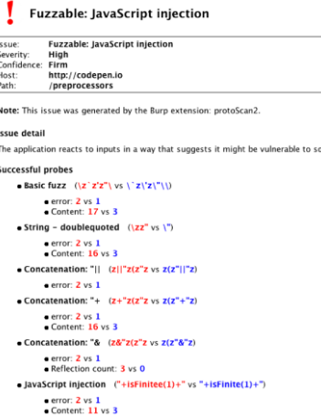

Core logic
We can avoid relying on input reflection by analysing the entire response and inferring whether our input caused a significant change. At its most basic, this is quite similar to a classic webapp fuzzer (throw input at the application and see if it crashes), and something many pentesters will be familiar with partially automating using Burp Intruder and fuzzlists. We aren't limited to naively looking at status codes and grepping for error messages - using automation, we can recognise changes as subtle as a single word or empty line disappearing.
Just like a manual tester, we can gather further information using pairs of probes. First, we identify the normal response of the application by sending a probe containing random alphanumeric characters. This will be referred to as the 'base' response. If a probe containing ' consistently gets a response that's different from the base, we can infer that the ' character has a special significance to the application. This may not indicate a vulnerability - the application might just be rejecting inputs containing '. Once again, we can use backslashes to escape our predicament. If the application responds to probes containing \' in the same way as random alphanumeric probes, we can infer that the anomalous response to ' is a caused by a failure to escape the character.
This technique isn't limited to identifying injection into strings. We can also identify injections into various other contexts by using alternative probe-pairs. Each additional probe pair only requires a few lines of code, so we're already using quite a few:
' vs \' // single-quoted string
' vs '' // single-quoted string (alternative escaping)
" vs \" // double-quoted string
7/0 vs 7/1 // number
${{ vs $}} // interpolation
/**/ vs /*/ // raw code
,99 vs ,1 // order-by
sprintz vs sprintf // function name
We can also string sequences of probe-pairs together to iteratively gather more information on a potential vulnerability. When faced with injection into a string, Backslash Powered Scanner will first identify the type of quote in use, then the concatenation sequence, then identify whether function calls are possible, and finally send a list of language-specific functions to try and identify the backend language. The following screenshot shows the scanner's output when pointed at an application vulnerable to Server-Side JavaScript Injection. Note that the information obtained in each stage is used by the following stage.

The scanner will still report a vulnerability even if it doesn't manage to identify the exact vulnerability: it simply displays all the successful probe-pairs. This means it effectively puts every input into one of three categories: 'boring' (no issue reported), 'vulnerable' (clearly suffers from a specific vulnerability in a known language), and 'interesting' (some probe-pairs were successful, application may be vulnerable to an unknown issue).